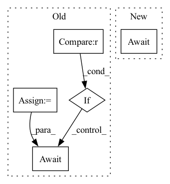

Pattern ID :1006

Before Change
else:
uses_with = {"dump_path": dump_path}
try:
pea_args_idx = 0
for i in range(len(self.peas)):
pea = self.peas[i]
if pea.role == PeaRoleType.PARALLEL:
pea.close()
_args = self.peas_args["peas"][pea_args_idx]
_args.noblock_on_start = True
////// BACKWARDS COMPATIBILITY, so THAT DUMP_PATH is in runtime_args
_args.dump_path = dump_path
//////
_args.uses_with = uses_with
new_pea = BasePea(_args)
self.enter_context(new_pea)
await new_pea.async_wait_start_success()
new_pea.activate_runtime()
self.peas[i] = new_pea
pea_args_idx += 1
After Change
else:
uses_with = {"dump_path": dump_path}
try:
await self.replica_set.rolling_update(
dump_path=dump_path, uses_with=uses_with
)
except:
In pattern: SUPERPATTERN
Frequency: 4
Non-data size: 5
Instances
Fragment ID: 4808185
Project Name: jina-ai/jina
Commit Name: d7f57cd1b3ef4a56517dfae3d99d39ba16cd5d43
Time: 2021-10-21
Author: joan.martinez@jina.ai
File Name: jina/peapods/pods/__init__.py
M Class Name: Pod
N Class Name: Pod
M Method Name: rolling_update(2)
N Method Name: rolling_update(2)
M Parent Class: BasePod
N Parent Class: BasePod
M File Name: jina/peapods/pods/__init__.py
N File Name: jina/peapods/pods/__init__.py
M Start Line: 584
M End Line: 601
N Start Line: 645
N End Line: 647
'>
Before Change
assert descr.device is None and descr
allocated_handle = None
allocated_size_bytes = descr.numel() * torch.finfo(descr.dtype).bits // 8
loop = asyncio.get_event_loop()
try:
async with hivemind.utils.enter_asynchronously(self._lock_acquire_memory):
if self.current_size_bytes + allocated_size_bytes > self.max_size_bytes:
await loop.run_in_executor(
None, self._wait_until_available, allocated_size_bytes, self.alloc_timeout
)
async with hivemind.utils.enter_asynchronously(self._lock_metadata):
After Change
try:
yield await shield_and_wait(alloc_task)
finally:
await shield_and_wait(self._schedule_free(alloc_size, alloc_task))
async def _schedule_alloc(self, alloc_size: int, descr: TensorDescriptor) -> Handle:
'>
Fragment ID: 4808184
Project Name: bigscience-workshop/distributed-bloom
Commit Name: 9997ada3bbeacfa2264f8df1f13f4d1d783f48e5
Time: 2022-12-22
Author: borzunov.alexander@gmail.com
File Name: src/petals/server/memory_cache.py
M Class Name: MemoryCache
N Class Name: MemoryCache
M Method Name: allocate_cache(2)
N Method Name: allocate_cache(2)
M Parent Class:
N Parent Class:
M File Name: src/petals/server/memory_cache.py
N File Name: src/petals/server/memory_cache.py
M Start Line: 69
M End Line: 92
N Start Line: 72
N End Line: 79
'>
Before Change
try:
return await self.session.post(url=self.url, json=req_dict).__aenter__()
except:
if retry == self.max_attempts:
raise
else:
wait_time = random.uniform(
0,
min(
self.initial_backoff
* self.backoff_multiplier ** (retry - 1),
self.max_backoff,
),
)
await asyncio.sleep(wait_time)
async def send_dry_run(self, **kwargs):
Query the dry_run endpoint from Gateway
After Change
req_dict["target_executor"] = req_dict["header"]["target_executor"]
for attempt in range(1, self.max_attempts + 1):
try:
response = await self.session.post(
url=self.url, json=req_dict
).__aenter__()
r_str = await response.json()
handle_response_status(response.status, r_str, self.url)
return response
except (ValueError, ConnectionError, BadClient, aiohttp.ClientError) as err:
'>
Fragment ID: 4808179
Project Name: jina-ai/jina
Commit Name: 948a2f92e712143ab61ab7263825736c495e6714
Time: 2023-03-14
Author: girishc13@users.noreply.github.com
File Name: jina/clients/base/helper.py
M Class Name: HTTPClientlet
N Class Name: HTTPClientlet
M Method Name: send_message(2)
N Method Name: send_message(2)
M Parent Class: AioHttpClientlet
N Parent Class: AioHttpClientlet
M File Name: jina/clients/base/helper.py
N File Name: jina/clients/base/helper.py
M Start Line: 138
M End Line: 153
N Start Line: 141
N End Line: 155